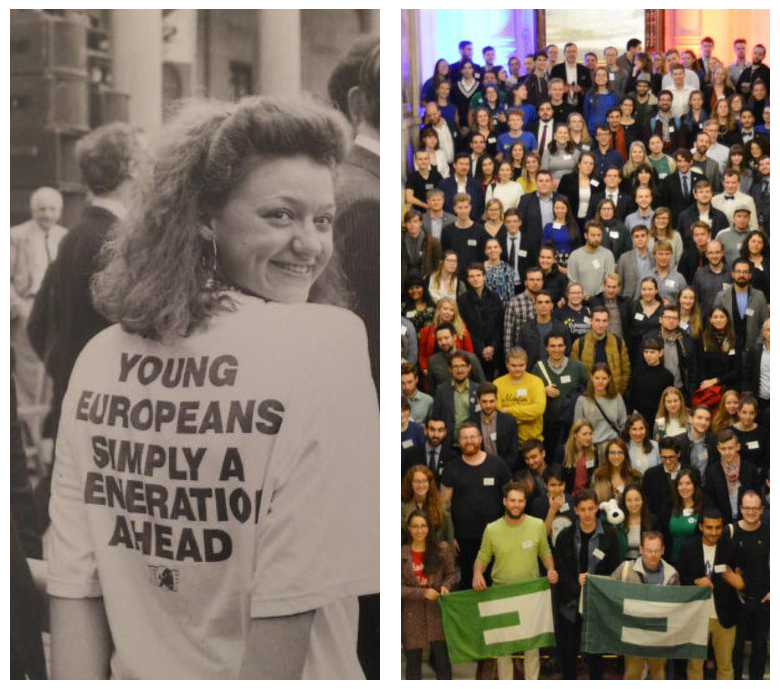

Young European Federalists eller JEF (Jeunes Européens Fédéralistes) har evolverat genom historien sedan 1940-talet, men grundades i nuvarande form i 1972. Förbudnet arbetar för ett mer demokratiskt, enat och federalt Europa inom ramen för EU.
I Sverige går vi under namnet “Unga Européer”. JEF består av nationella sektioner (JEF Sweden, JEF Denmark, JEF France), som i sin tur har lokalföreningar (JEF Paris, JEF Göteborg, JEF Skåne, etc…).
Vi är ett parti-politiskt fristående ungdomsförbund och har medlemmar från alla politiska partier. De vanligaste evenemangen som arrangeras är “Europakvällar”, där en grupp (4-8st) går ut och dricker och pratar om allt EU. Vi deltar även i större evenemang som förbundsårsmötet samt evenemang som arrangeras av JEF Europe och European Youth Event.
